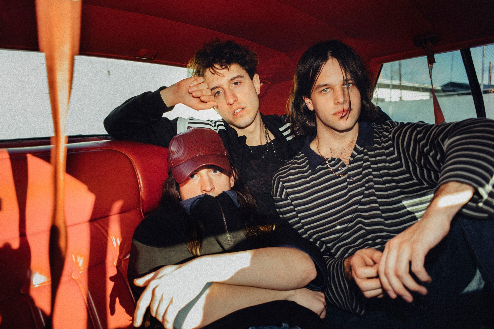

Beach Fossils

Brooklyn indie pop band Beach Fossils formed in 2009 as a vehicle for the solo recordings of multi-instrumentalist and vocalist Dustin Payseur. Beach Fossils' debut single, Daydream/Desert Sand, was released on Captured Tracks in February 2010; their self-titled album was released on the same label later that year and was met with critical acclaim. 2011's What a Pleasure EP showed the band continuing to experiment and refine their songwriting chops. The next Beach Fossils album Clash the Truth featured a more energetic sound reminiscent of the band’s live shows and was issued in early 2013 on Captured Tracks.
After taking a break, during which the band appeared on the HBO show Vinyl as members of the early-'70s "punk" band "the Nasty Bits," the group began working on a new album. This time out, Payseur involved the other members of the band in the writing process, with bassist Jack Doyle Smith and guitarist Tommy Davidson contributing ideas. Somersault showcased a band in bloom. Charting into new musical territory with a refined songwriting style, Somersault is an album that captures flashes of life in New York grounded in personal experience. The record was made in various locales in New York City and Los Angeles, including engineer Jonathan Rado's home studio and a cabin in Upstate New York, featuring guest vocals from Slowdive's Rachel Goswell among others. Somersault was released in mid 2017 on Bayonet Records, a label Payseur started with his wife Kate Garcia.